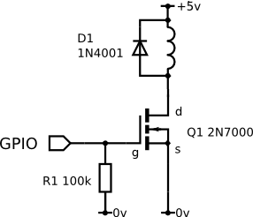

GPIO (General-Purpose Input/Output) – это тип пинов на OPi, напряжение на которых можно программно подавать и измерять. Также на некоторых пинах реализован аппаратный ШИМ (PWM). Интерфейс GPIO может быть использован для управления различной периферией: светодиодами, электромагнитами, электромоторами, сервоприводами и т. д.
Info Используйте распиновку, чтобы понять, какие из пинов на OPi поддерживают GPIO и ШИМ.
Info Для того, чтобы не создавалось конфликтов при использовании портов GPIO в образе закрыт доступ для портов 0, 1, 2, 3, 14, 15, на которые выведены интерфейсы подключения I2C и UART.
Для работы с GPIO на образе для OPi предустановлена библиотека pigpio. Чтобы взаимодействовать с этой библиотекой, запустите соответствующий демон:
sudo systemctl start pigpiod.service
Для включение автозапуска демона pigpiod используйте команду:
sudo systemctl enable pigpiod.service
Пример работы с библиотекой:
import time
import pigpio
# инициализируем подключение к pigpiod
pi = pigpio.pi()
# устанавливаем режим 11 пина на вывод
pi.set_mode(11, pigpio.OUTPUT)
# включаем сигнал на 11 пине
pi.write(11, 1)
time.sleep(2)
# отключаем сигнал на 11 пине
pi.write(11, 0)
# ...
# устанавливаем режим 12 пина на ввод
pi.set_mode(12, pigpio.INPUT)
# считываем состояние 12 пина
level = pi.read(12)
Для определения номера пина используйте распиновку Orange Pi.
Большинство сервоприводов управляются с помощью ШИМ-сигнала, причем крайним положениям привода соответствуют сигналы шириной приблизительно 1000 и 2000 мкс. Значения для конкретного сервопривода могут быть определены экспериментально.
Подключите сигнальный провод сервопривода к одному из GPIO-пинов OrangePi 5 Pro. Для управления сервоприводом, подключенного к 13 пину, используйте такой код:
import time
import pigpio
pi = pigpio.pi()
# устанавливаем режим 13 пина на вывод
pi.set_mode(13, pigpio.OUTPUT)
# устанавливаем на 13 пине ШИМ сигнал в 1000 мкс
pi.set_servo_pulsewidth(13, 1000)
time.sleep(2)
# устанавливаем на 13 пине ШИМ сигнал в 2000 мкс
pi.set_servo_pulsewidth(13, 2000)

Для подключения электромагнита используйте полевой транзистор (MOSFET). Подключите транзистор к одному из GPIO-пинов OPi. Для управления магнитом, подключенным к 18 пину, используйте такой код:
import time
import pigpio
pi = pigpio.pi()
# устанавливаем режим 18 пина на вывод
pi.set_mode(18, pigpio.OUTPUT)
# включаем электромагнит
pi.write(18, 1)
time.sleep(2)
# отключаем электромагнит
pi.write(18, 0)